MultiSystem
Dieser Artikel wurde für die folgenden Ubuntu-Versionen getestet:
Ubuntu 16.04 Xenial Xerus
Ubuntu 14.04 Trusty Tahr
Zum Verständnis dieses Artikels sind folgende Seiten hilfreich:
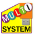
MultiSystem  ist ein freies Programm, um mehrere Linux-Distributionen, Live- oder Reparatursysteme sowie dafür benötigte Bootloader parallel auf einem externen Datenträger zu installieren. Dabei werden über 200 Systeme unterstützt. Als Datenträger kann z.B. ein USB-Stick, eine SDHC-Karte oder eine komplette Festplatte verwendet werden.
ist ein freies Programm, um mehrere Linux-Distributionen, Live- oder Reparatursysteme sowie dafür benötigte Bootloader parallel auf einem externen Datenträger zu installieren. Dabei werden über 200 Systeme unterstützt. Als Datenträger kann z.B. ein USB-Stick, eine SDHC-Karte oder eine komplette Festplatte verwendet werden.
MultiSystem ist nicht nur zum Testen von verschiedenen Distributionen geeignet, sondern man kann auch bei einigen Linux-Distributionen den "persistenten Modus" aktivieren. Dies erlaubt es, den Stick als Multiboot-System zu verwenden, in dem vom Benutzer durchgeführte Anpassungen auch beim nächsten Start übernommen werden.
Eine Installation auf einem USB-Stick hat den Vorteil, dass wenn die Verwendung eines optischen Laufwerks nicht möglich ist, meistens ein USB-Anschluss zur Verfügung steht, über welchen gebootet werden kann. Ist es andersherum nicht möglich, mit dem BIOS von einem USB-Stick zu booten, so kann man aus dem Programm heraus ein CD-Abbild erstellen, welches auf CD gebrannt die Bootroutine des USB-Sticks zum Laden der Systeme anstößt.
Installation¶

Fremdquelle¶
Um aus der Fremdquelle zu installieren, muss man unabhängig von der Ubuntu-Version die folgende Paketquelle freischalten:
Hinweis!
Zusätzliche Fremdquellen können das System gefährden.
deb http://liveusb.info/multisystem/depot all main
Um die Fremdquelle zu authentifizieren, kann man
entweder den Signierungsschlüssel herunterladen  und in der Paketverwaltung hinzufügen oder folgenden Befehl ausführen:
und in der Paketverwaltung hinzufügen oder folgenden Befehl ausführen:
wget -q http://liveusb.info/multisystem/depot/multisystem.asc -O- | sudo apt-key add -
Nach der Aktualisierung der Paketquellen kann folgendes Paket installiert werden [2]:
multisystem (Fremdquelle)
 mit apturl
mit apturl
Paketliste zum Kopieren:
sudo apt-get install multisystem
sudo aptitude install multisystem
Manuell¶
Installationsskript¶
Man kann sich das Skript install-sources-multisystem.sh.tar.bz2 für die Installation aus dem Quellcode von der Projektseite herunterladen. Dieses muss noch entpackt werden [3]. Danach kann die Installationsroutine über das Terminal gestartet werden [4]:
sudo ~/Downloads/install-sources-multisystem.sh #Der Pfad muss entsprechend angepasst werden.
Installation aus dem Quelltext¶
Folgende Abhängigkeiten müssen zuerst installiert werden [2]:
cryptsetup
grub-pc
hal
syslinux
zenity
imagemagick
squashfs-tools
fatresize (universe)
fuseiso (universe)
wmctrl (universe)
xdotool (universe)
qemu (universe)
gtkdialog (aus oben genannter Fremdquelle)
mit apturl
Paketliste zum Kopieren:
sudo apt-get install cryptsetup grub-pc hal syslinux zenity imagemagick squashfs-tools fatresize fuseiso wmctrl xdotool qemu gtkdialog
sudo aptitude install cryptsetup grub-pc hal syslinux zenity imagemagick squashfs-tools fatresize fuseiso wmctrl xdotool qemu gtkdialog
Der Quelltext multisystem.tar.bz2 kann von der Projektseite heruntergeladen werden. Dieser muss danach noch entpackt werden [3] und nach /tmp/multisystem/multisystem verschoben werden. Die Installationsroutine kann dann über das Terminal gestartet werden [4] :
| 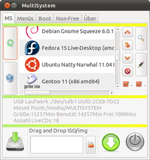 |
| MS-Menü |
sudo /tmp/multisystem/multisystem/install.sh
Es wird automatisch ein Desktopsymbol erstellt, welches entweder bedenkenlos gelöscht werden kann oder aber für eine Benutzung ausführbar gemacht werden muss [5].
Benutzung¶
Man kann das Programm über den Starter im Menü starten:
"Anwendungen -> Zubehör -> MultiSystem"
Als Speichermedium kann jeder nicht-optische, bootbare Datenträger verwendet werden. Dieser muss nur ein entsprechendes Speichervolumen für die zu verwendenden Systeme aufweisen.
Vorbereitung des Datenträgers¶
MultiSystem sucht im Verzeichnis /media nach bereits eingehängten Datenträgern.
Hinweis:
Zur Nutzung von MultiSystem ist es zwingend nötig, dass die (erste) Partition FAT-formatiert und primär ist. Das Label dieser Partition darf keine Leerzeichen beinhalten.
Gefundene Medien werden in einer Tabellenansicht mit Informationen über die Datenträger, wie Gerätebezeichnung oder Einhängepunkt, aufgelistet.
Ein Doppelklick auf ein Dateisystem oder die Nutzung von "Überprüfen" installiert ggfs. GRUB 2 nach Rückfrage auf dem Datenträger. Sofern noch kein Label existiert, wird dieses automatisch mit dem Namen "MULTISYSTEM" erstellt. Außerdem wird ein MultiSystem-Icon unter icon.ico auf dem Datenträger angelegt.
Hinweis:
Eigene Dateien oder Ordner auf der MultiSystem-Partition werden nicht gelöscht oder verändert, solange sie keine missverständlichen Bezeichnung wie boot/ oder den Namen eines Betriebssystems besitzen.
| 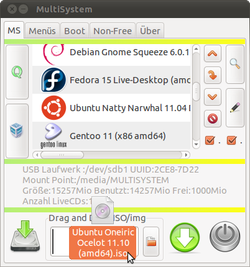 |
| Iso hinzufügen |
| 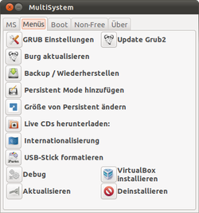 |
| Menüs-Übersicht |
| 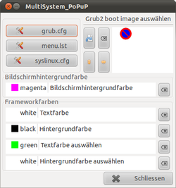 |
| GRUB bearbeiten |
Systeme hinzufügen / entfernen¶
Man kann sich über "Menüs -> Live CDs herunterladen" die unterstützten Systeme anzeigen lassen. Mit einem Doppelklick auf ein System wird man auf die entsprechende Download- oder Anbieterseite weitergeleitet. Nachdem man eine Abbilddatei (.iso oder .img) heruntergeladen hat, kann man diese entweder per Drag&Drop in das dafür vorgesehene Feld ziehen oder man klickt auf den Hinzufügen-Button und wählt den Ladeort des Abbildes manuell aus. Der Installationsvorgang wird nun automatisch nach Eingabe des Root-Passwortes durchgeführt.
Möchte man ein System wieder entfernen, so wählt man zuerst das System aus der Listenansicht aus und betätigt dann den Entfernen-Button . Nach einer Bestätigung wird das System aus GRUB und vom Datenträger (mit Ausnahme evtl. vorhandener Abbilddateien) entfernt. Beseitigt man so einen Persistenten Modus, so wird nur dieser und nicht sein Ursprungssystem vom Datenträger gelöscht.
Systemliste / GRUB anpassen¶
Grafisch¶
Die Menüeinträge für GRUB können mit einem Doppelklick auf ein System in der Systemliste umbenannt werden. Ebenso können mit einem Klick auf den Bearbeiten-Button 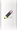 verschiedene Bootoptionen hinzugefügt und ausgewählt werden.
Die Reihenfolge der Einträge im GRUB-Menü lässt sich durch Auswählen des Menüeintrag-verschieben-Buttons frei anpassen. Dabei muss dann über einen Regler die neue Position bestimmt werden. Um Menüeinträge schrittweise hoch- oder herunter zu verschieben, werden die entsprechenden Buttons für hoch oder herunter gewählt.
Hinweis:
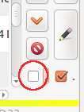 Möchte man einige Verschiebungen am Stück durchführen, ohne dass GRUB jedes Mal aktualisiert wird, so kann der Updateprozess von GRUB deaktiviert werden, indem der Haken aus der entsprechenden Option (linke Auswahlbox) entfernt wird (siehe Abbildung).
Abschließend muss der Haken vor der letzten Änderung wieder gesetzt werden, damit GRUB alle Änderungen übernimmt.
Manuell¶
Um Systemliste und GRUB-Menü anzupassen, navigiert man im Programm nach "Menüs -> GRUB Einstellungen". Es können nun die Farbgebung im GRUB-Menü verändert und ein Hintergrundbild für GRUB ausgewählt werden.
Die Systemliste und GRUB-Menüeinträge werden über die grub.cfg angepasst. Bei einem Klick auf diese Schaltfläche 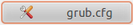 öffnet sich der standardmäßige Texteditor mit der zu bearbeitenden Datei. Anhand eines Beispiels soll hier eine Anpassungsmöglichkeit dargestellt werden. Dabei werden der Eintrag im GRUB-Menü sowie die Systemlisten-Bezeichnung innerhalb von MultiSystem angepasst:
[...]
#MULTISYSTEM_START
[...]
#MULTISYSTEM_MENU_DEBUT|28-05-2011-23:58:29-545463003|ubuntu-11.04-desktop-amd64.iso|multisystem-ubuntu|698Mio|
menuentry "ubuntu-11.04-desktop-amd64.iso"{
search --set -f "/ubuntu-11.04-desktop-amd64.iso"
loopback loop "/ubuntu-11.04-desktop-amd64.iso"
linux (loop)/casper/vmlinuz root=UUID=2CE8-7D22 debian-installer/locale=en_GB debian-installer/language=en kbd-chooser/method=en console-setup/layoutcode=de console-setup/variantcode= console-setup/modelcode=pc105 iso-scan/filename=/ubuntu-11.04-desktop-amd64.iso boot=casper file=/cdrom/preseed/ubuntu.seed noprompt quiet splash --
initrd (loop)/casper/initrd.lz
}
#MULTISYSTEM_MENU_FIN|28-05-2011-23:58:29-545463003|ubuntu-11.04-desktop-amd64.iso|multisystem-ubuntu|698Mio|
[...]
#MULTISYSTEM_STOP
[...]Die obere und untere Markierung stellt die Systemlisteneinträge dar, die mittlere Markierung den GRUB-Menüeintrag. Diese Einträge kann man fast beliebig anpassen. Neue Systeme werden in der Liste oberhalb von "#MULTISYSTEM_STOP" eingefügt.
Hinweis:
Damit Änderungen an der Systemliste wirksam werden, müssen beide Einträge des entsprechenden Systems den selben Namen besitzen.
Abschließend speichert man das Textdokument und schließt das GRUB-Popup-Fenster von MultiSystem. Daraufhin wird GRUB automatisch auf dem Datenträger aktualisiert.
Experten-Info:
In der Datei grub.cfg können noch einige GRUB-spezifische Änderungen vor der Zeile "#MULTISYSTEM_START" wie z.B. die Timeoutzeit oder der Standardmenüeintrag, vorgenommen werden. Außerdem können zum Booten der Systeme andere Parameter übergeben werden. Siehe dazu auch GRUB 2/Konfiguration.
| 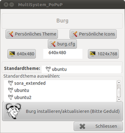 |
| Burg bearbeiten |
| 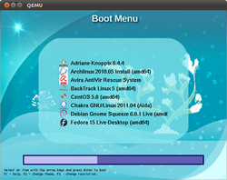 |
| Burg testen |
Burg verwenden¶
Über das Menü "Menüs -> Burg aktualisieren" kann man den auf GRUB 2 basierten, themenorientierten Bootloader Burg  auswählen.
auswählen.
Ist dieser noch nicht installiert, wird nach Bestätigung folgende Fremdquelle hinzugefügt und Burg automatisch installiert.
Adresszeile zum Hinzufügen des PPAs:
ppa:bean123ch/burg
Hinweis!
Zusätzliche Fremdquellen können das System gefährden.
Ein PPA unterstützt nicht zwangsläufig alle Ubuntu-Versionen. Weitere Informationen sind der  PPA-Beschreibung des Eigentümers/Teams bean123ch zu entnehmen.
PPA-Beschreibung des Eigentümers/Teams bean123ch zu entnehmen.
Damit Pakete aus dem PPA genutzt werden können, müssen die Paketquellen neu eingelesen werden.
Es stehen nun eine Vielzahl Themen aus der Paketquelle zur Verfügung. Diese können mit einem einfachen Klick in der Liste ausgewählt werden. Zur Installation oder Update von Burg auf dem Datenträger muss der große "Burg installieren"-Button ausgewählt werden. Burg verwendet die gleiche Systemliste wie GRUB. Zur Anpassung siehe daher Systemliste / GRUB anpassen.
Hinweis:
Um die verschiedenen Burg-Themen zu testen, kann man wie unter (Multi-)Boot-System testen beschrieben das Boot-System testen. Während man sich im Burgmenü befindet, mit F2 das Auswahlmenü der Burg-Themen öffnen und diese durchprobieren.
Experten-Info:
In der Datei burg.cfg können noch einige burgspezifische Änderungen vor der Zeile "#MULTISYSTEM_START" wie z.B. die Timeoutzeit oder der Standardmenüeintrag, vorgenommen werden. Für weiterführende Informationen siehe im Burg-Wiki und in der Ubuntu-Dokumentation .
Persistenter Modus¶
Erstellen¶
Im persistenten Modus werden vom Benutzer durchgeführte Änderungen am System auch beim nächsten Start übernommen bzw. wiederhergestellt. So ist es möglich, ein portables und personalisiertes System mit sich zu führen.
Um diesen Modus für ein bestimmtes System zu aktivieren, wird zuerst das betreffende System mit einem einfachen Klick ausgewählt. Dann navigiert man im Menü auf "Menüs -> Persistent Mode hinzufügen". Dort kann man nun die gewünschte Größe des Speicherplatzes für Veränderungen am System festlegen. Nach einer Bestätigung erscheint nun in Systemliste und GRUB- oder Burgmenü ein weiterer Eintrag für das gewählte System. Dieser kann entsprechend Systemliste / GRUB anpassen verändert werden.
| 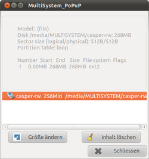 |
| Persistenten Modus anpassen |
Vergrößern / Zurücksetzen¶
Möchte man den Speicherplatz für den persistenten Modus vergrößern oder den Inhalt löschen, sodass alle Konfigurationen zurückgesetzt werden, so navigiert man zu "Menüs -> Größe von Persistent ändern" und wählt die entsprechende Aktion für den jeweiligen persistenten Modus.
Achtung!
Setzt man einen persistenten Modus zurück, so werden alle veränderten Einstellungen im entsprechenden System verworfen. Dazu gehören auch alle angelegten Dateien im entsprechenden System, wie z.B. die in /home/$USER/ und ~/Desktop.
Verkleinern¶
Das Verkleinern der Speicherdatei für den persistenten Modus muss über einen Umweg gelöst werden. Dazu wird die Speicherdatei als Blockgerät (engl. Loopdevice) eingehängt, wobei der Pfad zur einzuhängenden Speicherdatei und bei Bedarf auch der Einhängepunkt abzuändern sind. Den Pfad der Speicherdatei erfährt man über "Menüs -> Größe von Persistent ändern".
sudo mount -o loop /media/Pfad/zur_einzuhängeden\ Speicherdatei /mnt/
Die Speicherdatei, welche die vorgenommenen Änderungen am System auf dem Datenträger beinhaltet, ist nun in /mnt/ eingehängt. Der Inhalt wird mit rsync gesichert. Dazu wird ein Auslagerungsordner ~/Auslagerung\ persistenter\ Modus/ angelegt:
mkdir ~/Auslagerung\ persistenter\ Modus/; sudo rsync -av /mnt/ ~/Auslagerung\ persistenter\ Modus/
Nun kann die Speicherdatei wieder ausgehängt werden:
sudo umount /mnt/
Jetzt kann der persistente Modus wie hier beschrieben vom Datenträger entfernt werden. Danach wird ein neuer persistenter Modus wie hier beschrieben angelegt. Die neue Speicherdatei wird wieder eingehängt und der Inhalt der Auslagerungsordner hereingeschrieben:
sudo mount -o loop /media/Pfad/zur_neuen_einzuhängeden\ Speicherdatei /mnt/ sudo rsync -av ~/Auslagerung\ persistenter\ Modus/ /mnt/ sudo umount /mnt/
Wenn alles zufriedenstellend funktioniert hat, kann der Auslagerungsordner wieder entfernt werden:
sudo rm ~/Auslagerung\ persistenter\ Modus/ -rf
Achtung!
Eine fehlerhafte Schreibweise kann unter Umständen das komplette Benutzersystem von der Festplatte löschen.
Entfernen¶
Zum vollständigen Entfernen eines persistenten Modus ist es ausreichend, diesen wie ein normales System nach Systeme hinzufügen / entfernen zu entfernen.
Achtung!
Entfernt man einen persistenten Modus, so werden alle veränderten Einstellungen im entsprechenden System gelöscht. Dazu gehören auch alle angelegten Dateien im entsprechenden System, wie z.B. die in /home/$USER/ und ~/Desktop.
| 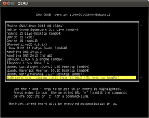 |
| Qemu |
(Multi-)Boot-System testen¶
In MultiSystem sind die zwei Emulatoren QEMU und VirtualBox so eingegliedert, dass man mit einem einfachen Klick den bootbaren Datenträger testen kann. So kann man z.B. überprüfen, ob das GRUB- oder Burgmenü nach Wunsch gestaltet wurde oder ob die Systeme richtig geladen werden.
Qemu¶
Mit einem Klick auf das grüne Qemu-Symbol kann die Emulation eines Bootvorgangs von dem Datenträger gestartet werden. Zu beachten ist lediglich eine Mindestgröße des freien Arbeitsspeichers von 256 MiB.
VirtualBox PUEL¶
Da VirtualBox PUEL nicht automatisch mit MultiSystem installiert wird, muss es u.U. noch nachinstalliert werden. Regelt man dies über das Programm mit einem Klick auf das blaue VirtualBox-Symbol, so wird eine [VirtualBox/Installation#Paket-aus-der-Paketquelle-installieren Paketquelle für VirtualBox PUEL] eingebunden und dieses daraus installiert.
Hinweis!
Zusätzliche Fremdquellen können das System gefährden.
Der erste Start beim Booten von einem USB-Stick schlägt fehl, da dafür das Extension-Pack installiert werden muss. Außerdem muss der aktuelle Benutzer der Gruppe vboxusers hinzugefügt werden:
sudo adduser $USER vboxusers
Hinweis:
Für weitere Informationen bezüglich der Installation von VirtualBox siehe unter VirtualBox/Installation.
Zum Ausprobieren des Datenträgers mit VirtualBox PUEL durch einen Klick auf das VirtualBox-Symbol sind mindestens 384 MiB freier Arbeitsspeicher nötig.
Backup und Wiederherstellung¶
Um eine Datensicherung aus dem Programm heraus durchzuführen, wählt man entweder die Backup-und-Wiederherstellungs-Schaltfläche aus oder navigiert nach "Menüs -> Backup / Wiederherstellen". Dort kann man entweder ein Backup im .img-Format anlegen oder ein existierendes, mit MultiSystem erstelltes Backup laden und auf den Datenträger zurückspielen.
Achtung!
Beim Wiederherstellen des Datenträgers aus einem vorhandenen Backup werden alle aktuell auf dem Datenträger befindlichen Inhalte überschrieben.
Von Nicht-USB-bootbaren Rechnern booten¶
Unterstützt das BIOS keinen Boot von einem USB-Gerät, besitzt jedoch ein CD-Laufwerk, so kann man über den PLOP Boot Manager  auf einer CD die Bootroutine von GRUB anstoßen. Dazu wird der PLOP Boot Manager über das Menü "Non-Free -> PLOP Boot Manager herunterladen" heruntergeladen. Danach kann man über das Menü "Boot -> CD zum starten von USB erstellen" ein CD-Abbild mit dem PLOP Boot Manager erstellen. Dieses befindet sich darauf direkt im Homeverzeichnis des Benutzers unter dem Namen cd-boot-liveusb.iso und muss noch mit einem Brennprogramm auf CD gebrannt werden.
auf einer CD die Bootroutine von GRUB anstoßen. Dazu wird der PLOP Boot Manager über das Menü "Non-Free -> PLOP Boot Manager herunterladen" heruntergeladen. Danach kann man über das Menü "Boot -> CD zum starten von USB erstellen" ein CD-Abbild mit dem PLOP Boot Manager erstellen. Dieses befindet sich darauf direkt im Homeverzeichnis des Benutzers unter dem Namen cd-boot-liveusb.iso und muss noch mit einem Brennprogramm auf CD gebrannt werden.
Hinweis:
Alternativ kann PLOP auch direkt auf die Festplatte heruntergeladen werden und dann manuell ein Menüeintrag für den entsprechenden Bootloader hinzugefügt werden. Nähere Hinweise finden sich dazu in der deutschen Dokumentation des Programms.
Beim Booten von der CD erkennt der PLOP Boot Manager das gleichzeitig angeschlossene USB-Gerät und leitet die Bootroutine von GRUB ein.
Deinstallation¶
Hat man MultiSystem über die Fremdquelle installiert, kann man es einfach über die Paketverwaltung deinstallieren oder direkt im Programm über den Menüpunkt "Deinstallieren" die Deinstallation starten.
Wurde aus dem Quelltext installiert, muss folgender Befehl zur Deinstallation ausgeführt werden:
sudo /usr/local/share/multisystem/uninstall.sh
- Erstellt mit Inyoka
-
 2004 – 2017 ubuntuusers.de • Einige Rechte vorbehalten
2004 – 2017 ubuntuusers.de • Einige Rechte vorbehalten
Lizenz • Kontakt • Datenschutz • Impressum • Serverstatus -
Serverhousing gespendet von